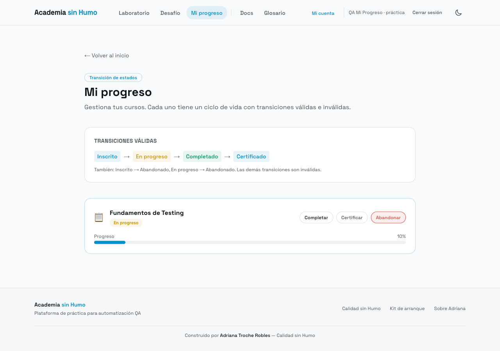

Bug 1: Estado terminal Abandonado permite Retomar → En progreso
Pasos
- Comenzar curso
- Abandonar
- Clic en Retomar
Datos / valor límite
Valor límite: transición desde Abandonado (estado terminal)
Esperado
Abandonado sin transiciones. Retomar rechazado.
Actual
Estado tras Retomar: En progreso
Evidencia
